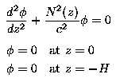
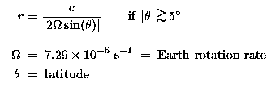
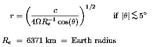

The baroclinic Rossby radius of deformation plays a fundamentally important role in large-scale ocean circulation theory. It defines the length scale of baroclinic variability longer than which internal vortex stretching is more important than relative vorticity. It also figures in the phase and group velocities of baroclinic Rossby-wave solutions to the linear, unforced potential vorticity equation for zero background mean flow. It is intimately related to the dominant length scale of unstable waves in a stratified shear flow.
In consideration of its significance to ocean circulation theory, a global climatological atlas of the baroclinic Rossby radius of deformation has been computed on a 1-degree global grid from climatological average temperature and salinity profiles. The baroclinic Rossby radius of deformation is directly related to the phase speed of long, baroclinic gravity waves, which is also a very useful parameter in the study of ocean wave dynamics. A global atlas of the baroclinic gravity-wave phase speed has therefore also been computed on the same 1-degree global grid.
The baroclinic gravity wave phase speed, c, is computed numerically as described in detail by Chelton et al (1997) by solving a discretized version of a Sturm-Liouville eigenvalue problem of the form:

where H is the mean water depth and N is the buoyancy frequency computed from the "neutral density gradient," defined to be the vertical gradient of density adiabatically adjusted to eliminate the effects of compressibility. The rigid-lid boundary condition in this eigenvalue problem is appropriate for the first-baroclinic eigenvalue, c, that is of interest here.
|
(638x462, 28kb GIF) |
A global contour map of the baroclinic gravity-wave phase speed is displayed above. Water depths shallower than 3500 m have been shaded. The effects of stratification and water depth on c are very evident from the figure. Comparison with the bathymetric shading reveals that contours of c tend to parallel bathymetric contours. Major topographic features such as the Mid-Atlantic Ridge, the East Pacific Rise, the Hawaiian Ridge, the complex of ridges in the Indian Ocean and numerous smaller ridges and seamount chains throughout the world ocean are clearly delineated by the locally reduced values of c in shallower water. The basin-scale longitudinal variations of c (generally larger in the west than in the east) are manifestations of geographical variations of the stratification, which tends to be strongest in the western basins.
Outside of the tropics, the baroclinic Rossby radius of deformation, r, is computed from the baroclinic gravity-wave phase speed, c, by

In the equatorial band within about 5 degrees of the equator, the baroclinic Rossby radius of deformation can be defined as

|
(632x459, 23kb GIF) |
A global contour map of the baroclinic Rossby radius of deformation is displayed above, again with shading of water depths shallower than 3500 m. The equatorial solution is contoured within 5 degrees of the equator. The geographical variability is dominated by the latitudinal dependence in the denominator of the extratropical solution for r, as is clearly evident from the predominantly zonal orientations of the contours. The baroclinic Rossby radius decreases from about 240 km in the near-equatorial band to less than 10 km at latitudes higher than about 60 degrees. The basin-scale general increase in the latitude of a contour with increasing distance from the eastern boundary arises because of the effects of stratification noted above with regard to the contour map of c. The shorter-scale perturbations from strictly zonal contours of r near major topographic features are manifestations of the effects of water depth, also noted previously with regard to the contour map of c.
These new atlases have been compared by Chelton et al (1997) with previously published coarse-resolution 5-degree maps of r for the northern hemisphere and the South Atlantic and with a fine-resolution 1-degree map of c for the tropical Pacific. It was concluded that the methods used in these earlier estimates yield values that are biased systematically low by as much as 15% owing to seemingly minor computational errors.
Digital files of the 1-degree gridded field of the baroclinic gravity-wave phase speed c and the baroclinic Rossby radius of deformation r shown in the figures above can be downloaded by clicking the corresponding icon below.
A digital ASCII file of the 1-degree gridded fields of the baroclinic gravity-wave phase speed c and the baroclinic Rossby radius of deformation r shown in the figures above can be downloaded by clicking the icon below. Each line of the file contains:
Reference:
Chelton, D. B., R. A. deSzoeke, M. G. Schlax, K.
El Naggar and N. Siwertz, 1998: Geographical variability of the
first-baroclinic Rossby radius of deformation. J. Phys. Oceanogr.,
28, 433-460.